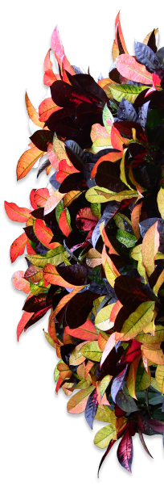

The Backstage of the Wilderness World.
The site was founded on the basis of a volunteer movement to
protect and care for animals.
How it works
The main goal is to help the animals, as well as the
nature reserves and zoos where they are kept. We are currently working on video projects targeting
pandas in China, eagles on an island near Los Angeles, alligators in Florida and gorillas in the
Congo. These have a total of more than 1,500 mammals and reptiles.

giant Pandas
Native to Southwest China

Eagles
Native to South America
Gorillas
Native to Congo

Two-toed Sloth
Mesoamerica, South America
cheetahs
Native to Africa

Penguins
Native to Antarctica
Pick and feed a friend
We know the animals bring you joy, and in these extraordinary times,
we’re glad.
During a time when the COVID-19 epidemic is touching all of
our lives, we’re proud and glad that people around the world find joy in PetStory.
Even though the zoo has reopened, we need you now more than
ever to help us deal with these problems. Please consider a gift to our Emergency Support Fund
.
How it works
Pay with card
Payment goes to the zoo
Your favourite animal gets delicious dish